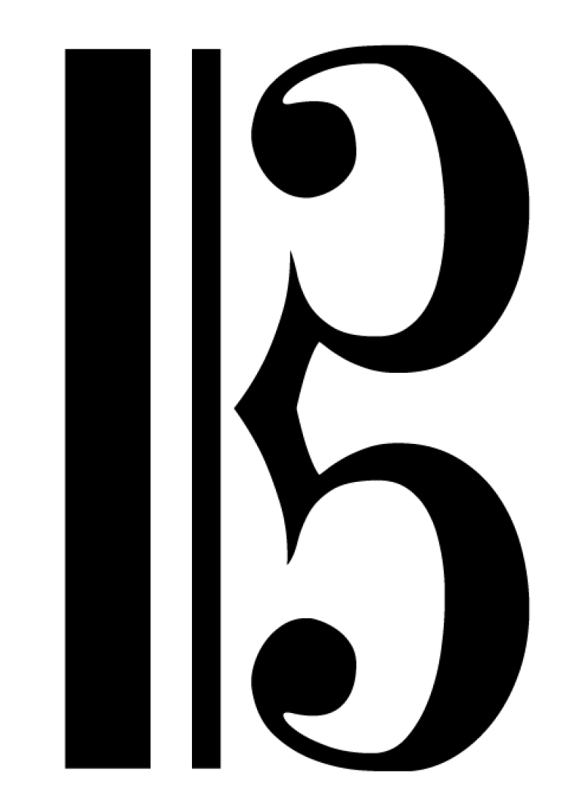
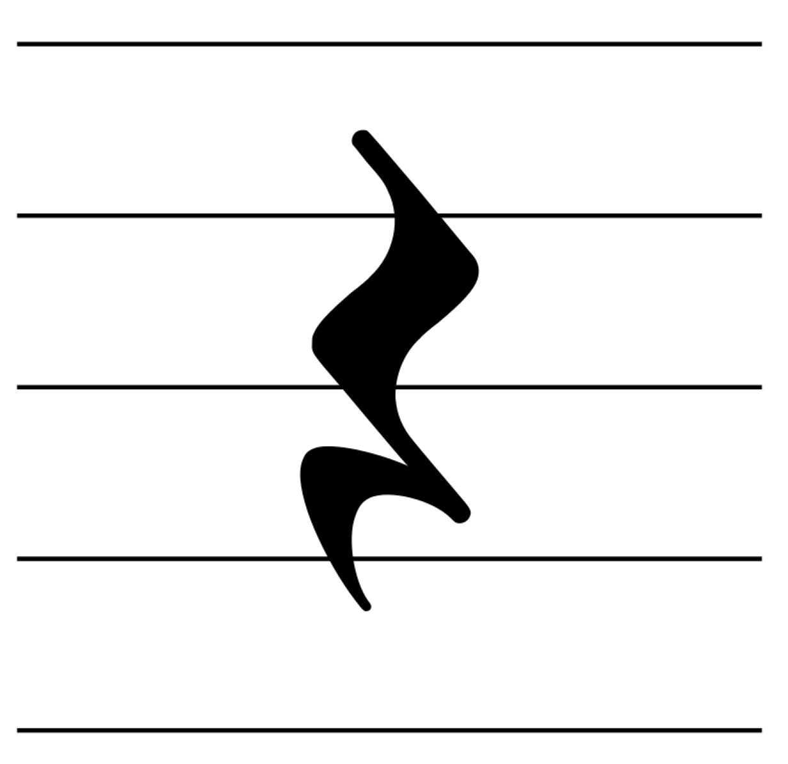
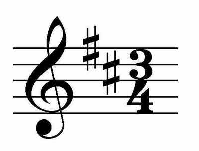
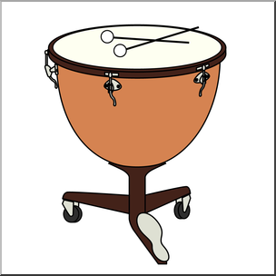
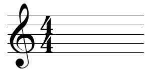
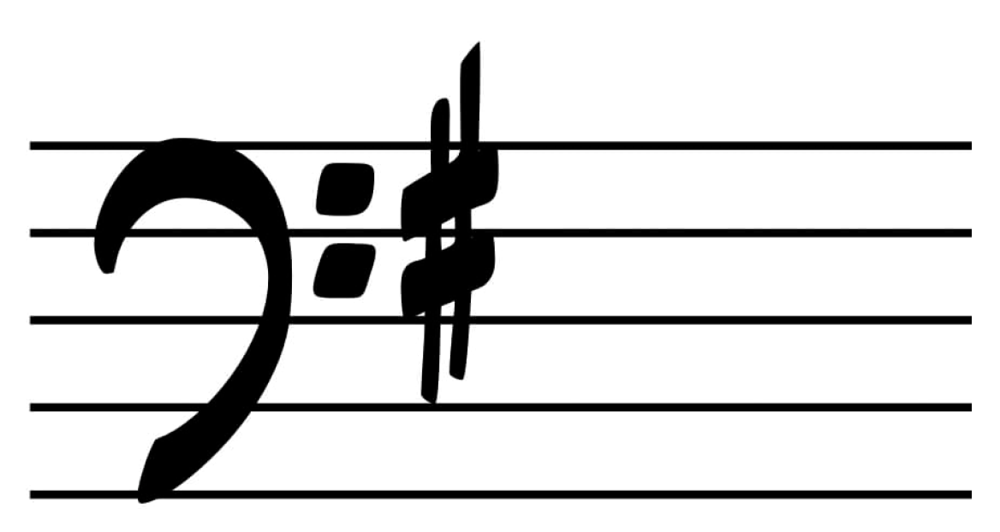
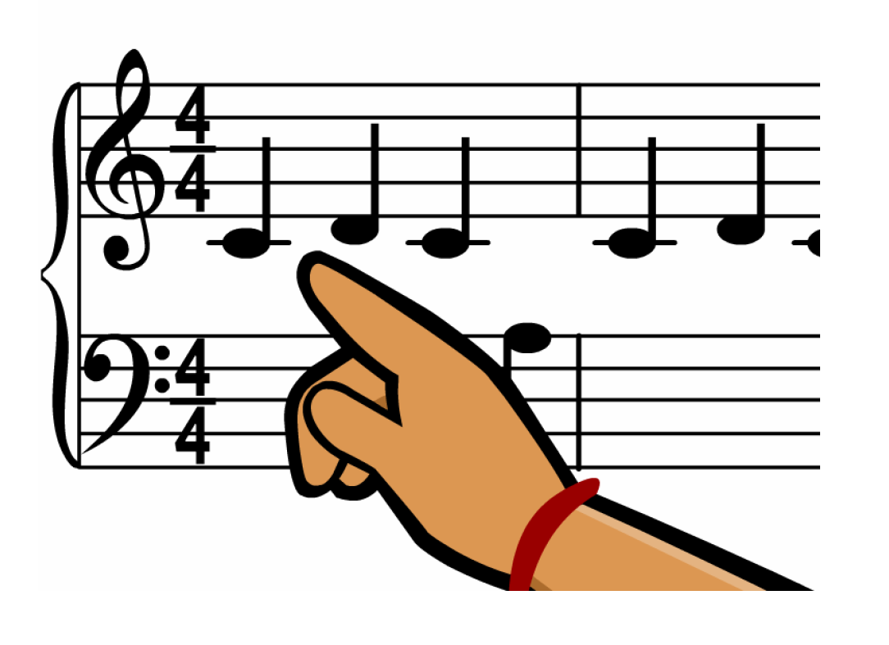
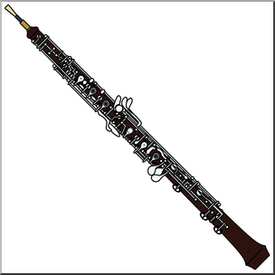

1. What clef is this?

2. What type of rest is this?

3. What is the key signature?

4. What is the name of this percussion instrument?
5. This rest is a:

6. The time signature indicates:

7. What is the key signature?

8. Which note is this?

9. In which orchestral family does this instrument belong?